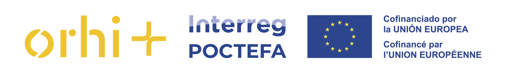

Une journée pour découvrir, en conditions réelles, comment des plastiques difficiles à valoriser peuvent devenir de nouveaux matériaux, produits et solutions pour nos territoires.
Suivez tout le parcours d’un déchet plastique : de son arrivée chez SOLTECO à sa transformation en un nouveau matériau, puis en produits durables et en applications réelles.
Votre entreprise ou organisation génère-t-elle des plastiques difficiles à valoriser ? Découvrez de nouvelles possibilités de valorisation et échangez directement avec SOLTECO sur vos propres flux de déchets.
Vous êtes une entreprise de construction, de jardinage ou de paysage, une pépinière, une collectivité, un gestionnaire d’espaces naturels ou un prescripteur ? Découvrez des produits en plastique recyclé destinés à l’aménagement, aux espaces publics et naturels, à l’agriculture, à la construction et à d’autres applications.
Découvrez l’installation en fonctionnement et suivez les premières étapes de transformation des déchets plastiques : réception, préparation, broyage, mélange et traitement. Vous pourrez voir et toucher différents types de déchets et comprendre lesquels peuvent être valorisés et comment.
Découvrez en fonctionnement la fabrication des profilés et des produits en plastique recyclé. SOLTECO présentera leurs principales propriétés, leurs avantages, leurs possibilités de transformation et leurs différents domaines d’application.
Découvrez des réalisations SOLTECO installées en conditions réelles dans un environnement naturel : passerelles, clôtures, bancs, tables, signalétique et autres aménagements.
Dans le cadre du projet ORHI+, une expérience de coopération transfrontalière est déjà en cours autour de la valorisation de déchets plastiques agricoles provenant des Pyrénées-Atlantiques.
Ces déchets sont collectés et transformés par SOLTECO pour produire de nouveaux matériaux et produits. Ce démonstrateur constitue un exemple concret des possibilités de coopération. La mission permettra d’aller plus loin : explorer de nouveaux flux de déchets, de nouvelles applications et de nouvelles opportunités de collaboration transfrontalière.
La journée se terminera par un échange ouvert entre les participants et SOLTECO autour de trois questions :
Programme et horaires provisoires, susceptibles d’être ajustés.
PUBLIC CONCERNÉ — Entreprises, collectivités, organismes publics, clusters, associations, centres technologiques et autres acteurs intéressés par la valorisation des déchets plastiques et les solutions d’économie circulaire.
Vous souhaitez participer à la mission ? L’inscription est gratuite et le nombre de places est limité. Lors de votre inscription, vous pourrez également nous indiquer si vous générez un déchet plastique difficile à valoriser, si vous recherchez des produits ou solutions circulaires, ou si vous souhaitez explorer une opportunité de collaboration avec SOLTECO.
INSCRIVEZ-VOUS À LA MISSION →Lien d’inscription à ajouter.